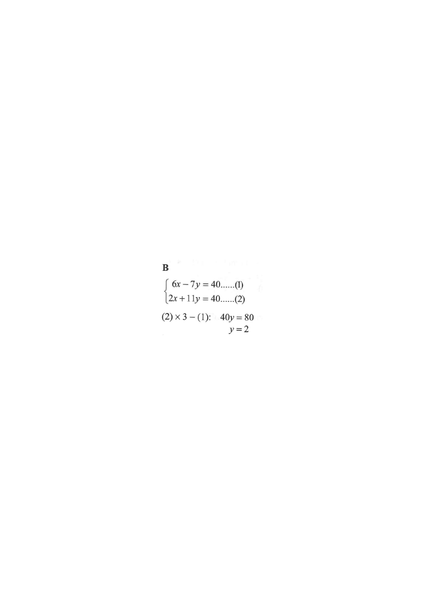

Figure · Linear System Visualisation
Two lines intersecting at the solution point.
Line (1): $6x-7y=40$
Line (2): $2x+11y=40$
Intersection (solution)
HKDSE 2019 · Paper 2 · Question 3
Question
If
\(\begin{cases} 6x-7y=40 & \text{......(1)}\\[2pt] 2x+11y=40 & \text{......(2)}\end{cases}\)
, then \(y=\)
A. \(-4\)
B. \(2\)
C. \(4\)
D. \(9\)

Figure (original exam diagram)
Step-by-step Solution
Step 1
Write down the system and label it:
\[
\begin{cases}
6x-7y=40 & \text{......(1)}\\[2pt]
2x+11y=40 & \text{......(2)}
\end{cases}
\]
Hint: We want \(y\), so aim to eliminate \(x\).
Step 2
Multiply equation (2) by \(3\) so the \(x\)-coefficients match:
\[3\times(2):\quad 6x+33y=120 \quad\text{......(3)}\]
Hint: \(2x\times 3 = 6x\) matches the \(6x\) in (1).
Step 3
Subtract (1) from (3) to eliminate \(x\):
\[
\begin{aligned}
(3)-(1):\quad &(6x+33y)-(6x-7y)=120-40\\
&40y=80
\end{aligned}
\]
Hint: \(6x-6x=0\), so only \(y\) remains.
Step 4
Solve for \(y\):
\[y=\frac{80}{40}=2\]
Hint: Check by substituting \(y=2\) into (1): \(6x-14=40\Rightarrow x=9\).
Answer: B (\(y=2\))